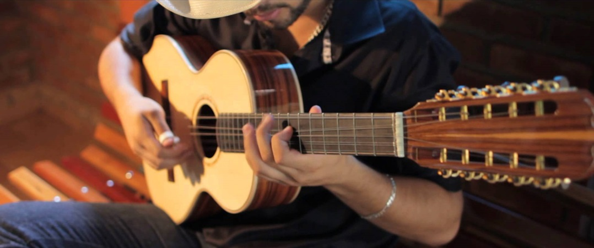
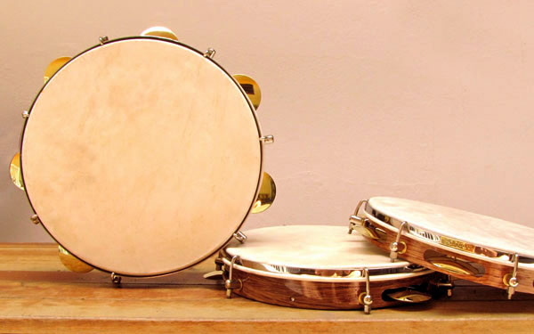
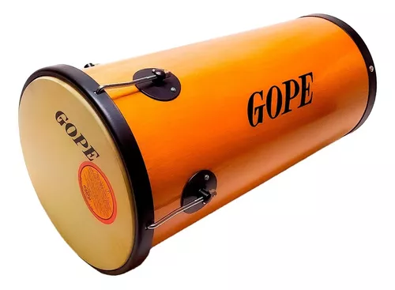
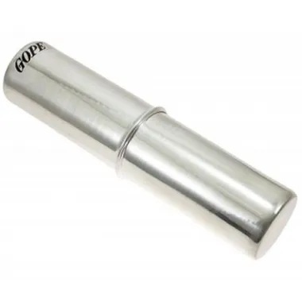
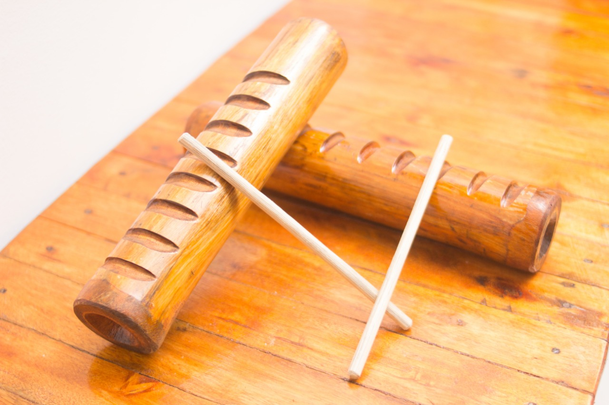
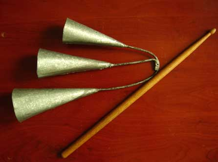
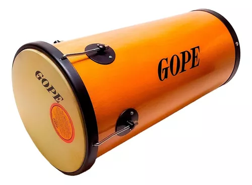
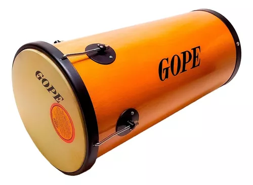

*Este site possui acessibilidade. Ultilize a função abaixo e aproveite*.
História do Samba
O que é o samba?
O samba é um gênero musical brasileiro com raízes na cultura afro-brasileira, originado durante a escravidão. Surgiu no final do século XIX e início do século XX nas regiões portuárias do Rio de Janeiro, como a Praça Onze e a Pequena África, onde escravos libertos e seus descendentes se reuniam para dançar e tocar instrumentos como cavaquinho, pandeiro e violão. Inicialmente, foi marginalizado pela elite, considerado culturalmente inferior e associado a locais de entretenimento noturno e prostituição. No entanto, cresceu em popularidade entre as camadas mais pobres da população e sua influência se espalhou para além das áreas urbanas do Rio de Janeiro.
O samba no século XX
No século XX, o samba passou por diversas transformações e influências refletindo os contextos sociais, políticos e culturais do Brasil. Inicialmente marginalizado e associado às camadas populares, era praticado em ambientes informais. Na década de 1930, ganhou reconhecimento com compositores como Noel Rosa, Cartola e Ary Barroso, elevando-o a um status nacional. Nas décadas seguintes, surgiram subgêneros como o samba-canção, influenciado pela música norte-americana, e o samba de partido-alto, com improvisações.
Na década de 1930, ganhou reconhecimento graças a compositores renomados como Noel Rosa, Cartola e Ary Barroso, que popularizaram o gênero através de gravações e rádio. Nos anos 1940 e 1950, surgiu o samba-canção, mais melódico e romântico, influenciado pela música norte-americana e pela bossa nova. A década de 1960 trouxe destaque para o samba de partido-alto, caracterizado por improvisações. Nos anos 1970 e 1980, o pagode trouxe renovação com grupos como Fundo de Quintal e Raça Negra, enquanto o samba-enredo se destacou nos desfiles de carnaval.
Grandes artistas como Cartola, Nelson Cavaquinho, Clara Nunes, entre outros, preservaram as raízes do samba e enriqueceram o gênero com suas contribuições. No final do século XX, o samba se fundiu com outros estilos musicais, como rock, eletrônica e hip-hop, originando subgêneros como o samba-rock e o samba-rap.
Ao longo do século XX, o samba se consolidou como uma das principais expressões culturais brasileiras, mantendo sua autenticidade e adaptando-se às mudanças sociais e musicais.
Nos anos 1970 e 1980, o pagode trouxe renovação ao samba, com grupos como Fundo de Quintal e Raça Negra. O samba-enredo também se destacou nos desfiles de carnaval. Grandes artistas como Cartola, Nelson Cavaquinho, Clara Nunes e outros enriqueceram o gênero.
final do século XX, o samba se fundiu com outros estilos, como rock, eletrônica e hip-hop, originando samba-rock e samba-rap. O samba se adaptou e se reinventou, mantendo sua autenticidade e se consolidando como expressão cultural brasileira.
De exemplo para a mistura do samba com outros ritmos, tem-se a musica "A Pagodeira", composição da cantora Marvvila, com participação dos cantores e compositores de funk, popularmente conhecidos como PK e Mc Don Juan:
Samba e Pagode são a mesma coisa?
O samba e o pagode são dois gêneros musicais brasileiros relacionados, mas eles têm algumas diferenças distintas em termos de estilo, história e características. Aqui estão algumas das principais diferenças entre samba e pagode:
- Origens e História;
- Estilo Musical;
- Instrumentação;
- Popularidade e Audiência.
Em resumo, o samba é um gênero musical mais antigo, diversificado e enraizado na cultura afro-brasileira, enquanto o pagode é uma vertente mais recente do samba, com uma abordagem musical mais suave e letras frequentemente românticas. Ambos os gêneros têm seu lugar importante na música brasileira e têm contribuído para a rica tapeçaria musical do país.
Grupo "Turma do Pagode", popularmente conhecido no Brasil:
Instrumentos mais comuns no Samba:
1 - Viola
A viola chegou ao Brasil pelas mãos dos jesuítas, que tocavam o instrumento para encantar os indígenas, especialmente os curumins. Um dos seus mais famosos tocadores dessa época foi José de Anchieta. Logo, o instrumento se interiorizou, e nas mãos dos trabalhadores do campo, ganhou o nome de viola caipira.

2- Pandeiro
o instrumento é bastante conhecido e popular na Ásia, África e Europa, havendo, no entanto, a possibilidade de já existir no paleolítico. Em todas as grandes civilizações do passado, o pandeiro aparece representado com vulgaridade especialmente em volta do Mediterrâneo. O instrumento é presente no samba.

3 - chocalho
Chocalho é o nome genérico para vários instrumentos musicais, mais precisamente idiofones de agitamento, que consistem num recipiente oco que contém pequenos objetos no seu interior.
4 - Atabaque e Tantan
Eles são usados em rituais, danças e festas religiosas, principalmente nas crenças de origem afro-brasileira. Mas também fazem sucesso em ritmos populares, como samba e axé.

5 - Ganzá (ou Canzá)
Ganzá ou canzá é um instrumento musical de percussão utilizado no samba e outros ritmos brasileiros. O ganzá é classificado como um idiofone executado por agitação. É um tipo de chocalho, geralmente feito de um tubo de metal ou plástico em formato cilíndrico, preenchido com areia, grãos de cereais ou pequenas contas

6 - Reco Reco
Reco-reco ou dicanza, também conhecido no Brasil por: raspador, caracaxá ou querequexé é um termo genérico que indica os idiofones cujo som é produzido por raspagem.

7 - Agogô
O agogô é um instrumento musical idiofone, compõe-se de duas até 4 campânulas de ferro, ou dois cones ocos e sem base, de tamanhos diferentes, de folhas de Flandres, ligados entre si pelas vértices.
Para se tirar som desse instrumento bate-se com uma baqueta de madeira nas duas bocas de ferro, também chamadas de campânulas, do instrumento.

8 - Berimbau
O berimbau ou hungo, também conhecido como berimbau de peito em Portugal e hungu na África, é um instrumento de corda com origem em Angola e tradicional da Bahia. É também conhecido entre os angolanos como m'bolumbumba, e utilizado pelos quimbundos, ovambos, nyanekas, humbis e khoisan.
9 - Cavaco e Banjo
O Banjo brasileiro possui 4 cordas, e foi popularizado nas rodas de samba do Brasil em meados da década de 1970, quando o cantor, compositor e músico Almir Guineto adotou a ideia de seu parceiro musical, Mussum, de adaptar o corpo do instrumento ao braço do cavaquinho. Assim, percebeu que, além da qualidade do som, a armação reforçada do banjo reduzia o risco de rompimento de cordas. O banjo passou a ser utilizado com o mesmo número de cordas do cavaquinho, porém com uma afinação mais grave e com a peculiaridade da batida diferenciada. Atualmente o Banjo no samba é muito bem tocado por grandes músicos e professores, exemplo é o Luciano Lamar, que faz a grande diferença com sua mão direita e a famosa jogada da munheca. Vale destacar em seu grande acervo de participações, a participação especial com o cantor Solano, o sucesso foi tanto que após atravessar a introdução da música, o vídeo ganhou destaque no "Pagodeiro"
Resumo e Conclusões
O samba é um vibrante e icônico gênero musical originário do Brasil, especialmente do Rio de Janeiro, conhecido por sua batida contagiante e letras que frequentemente abordam temas de amor, saudade, cultura brasileira e protesto social. Este gênero incorpora uma variedade de instrumentos de percussão, como o pandeiro, surdo e tamborim, e é marcado por sua rica diversidade, apresentando várias variações, incluindo o samba de raiz, samba-enredo e samba-canção. O samba desempenhou um papel vital na construção da identidade cultural do Brasil e é reverenciado tanto nacional quanto internacionalmente como uma expressão musical única e apaixonante. Até a próxima, pessoal. Obrigada.


 
